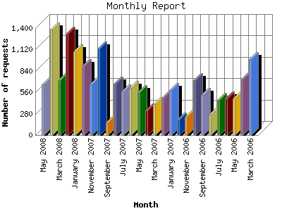

The Monthly Report identifies activity for each month in the report
time frame. Remember that each page hit can result in several server requests
as the images for each page are loaded.
Note: Depending on the
report time frame, the first and last months may not represent a complete
month's worth of data, resulting in lower hits.

| Month | Number of requests | Number of page requests | |
|---|---|---|---|
| 1. | March 2006 | 996 | 120 |
| 2. | April 2006 | 724 | 118 |
| 3. | May 2006 | 482 | 102 |
| 4. | June 2006 | 480 | 92 |
| 5. | July 2006 | 461 | 91 |
| 6. | August 2006 | 266 | 65 |
| 7. | September 2006 | 524 | 105 |
| 8. | October 2006 | 715 | 124 |
| 9. | November 2006 | 241 | 74 |
| 10. | December 2006 | 200 | 71 |
| 11. | January 2007 | 592 | 103 |
| 12. | February 2007 | 484 | 94 |
| 13. | March 2007 | 406 | 86 |
| 14. | April 2007 | 322 | 86 |
| 15. | May 2007 | 563 | 99 |
| 16. | June 2007 | 613 | 116 |
| 17. | July 2007 | 572 | 140 |
| 18. | August 2007 | 674 | 108 |
| 19. | September 2007 | 170 | 62 |
| 20. | October 2007 | 1,133 | 188 |
| 21. | November 2007 | 663 | 148 |
| 22. | December 2007 | 903 | 154 |
| 23. | January 2008 | 1,095 | 252 |
| 24. | February 2008 | 1,325 | 280 |
| 25. | March 2008 | 719 | 147 |
| 26. | April 2008 | 1,377 | 184 |
| 27. | May 2008 | 659 | 113 |
Most active month February 2008 : 280 pages sent. 1,377 requests handled.
Monthly average: 123 pages sent. 642 requests handled.
This report was generated on May 21, 2008 04:12.
Report time frame March 27, 2006 22:57 to May 20, 2008 23:55.
| Web statistics report produced by: analog 5.1 / Report Magic 2.21 |